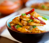
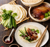
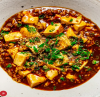
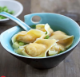

Recipe Catalogue |
Back to Home | ||
|  | Kung Pao Chicken Dish “This is probably the most well-known Chinese chicken dish outside of China,” Yinn Low says. “It’s also an authentic and traditional dish that you can find in many restaurants in China.” The spicy stir-fried chicken dish originates from the Sichuan province of southwestern China, and while you’ve probably had the Westernized version, the real thing is fragrant, spicy and a little bit mouth-numbing, thanks to Sichuan peppercorns. If you want to avoid the Americanized copycat, Yinn Low says the O.G. is actually quite easy to recreate at home. |
||
|  | Peking Duck Dish “Personally, I think Peking duck is the best way to eat duck,” Yinn Low tells us of the Beijing dish. “Crispy roasted duck sliced into bite-sized pieces, rolled up in a wrapper with salad and hoisin sauce.” Peking duck is seasoned, dried for 24 hours and cooked in an open-air oven called a hung oven, so it’s not something you can really replicate at home...but it is something we recommend seeking out at a traditional Chinese restaurant. (It’s traditionally carved and served in three courses: skin, meat and bones in the form of broth, with sides like cucumbers, bean sauce and pancakes). |
||
|  | Mapo Tofu Dish Maybe you’ve heard of or even tried mapo tofu, but Westernized versions of the Sichuanese tofu/beef/fermented bean paste dish are usually much less spicy than their traditional counterpart, which is laden with chile oil and Sichuan peppercorns. Fun fact: The literal translation of the name is “pockmarked old woman’s bean curd,” thanks to origin stories that claim it was invented by, well, a pockmarked old woman. It’s got a little bit of everything: textural contrast, bold flavors and lots of heat. |
||
|  | Wonton Soup “Wontons are one of the most authentic Chinese dumplings,” Yinn Low says. The wontons themselves are made with a thin, square dumpling wrapper and can be filled with proteins such as shrimp, pork, fish or a combination, depending on the region (Yinn Low’s recipe calls for shrimp). The broth is a rich concoction of pork, chicken, Chinese ham and aromatics, and you’ll often find cabbage and noodles mingling with the wontons |
||
{kind=link}
{kind=link}
{kind=link}
{kind=link}